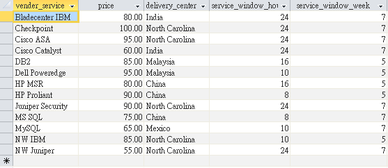
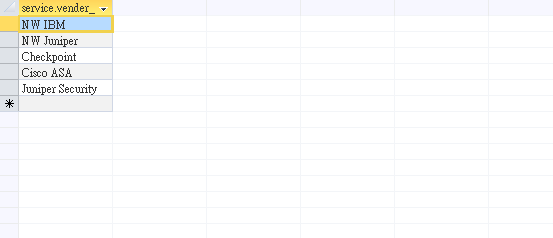
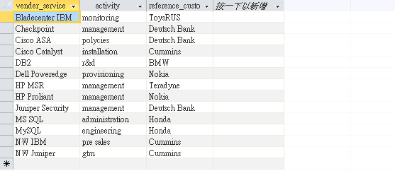
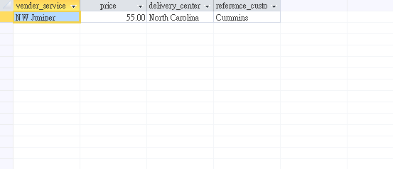
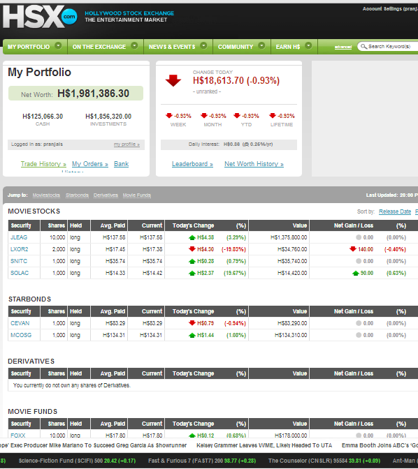
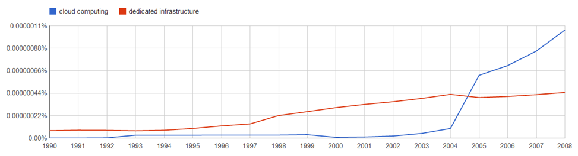
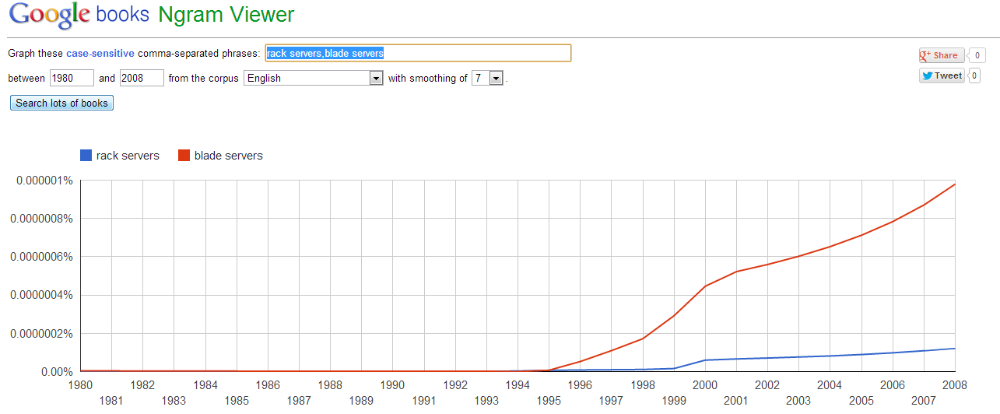
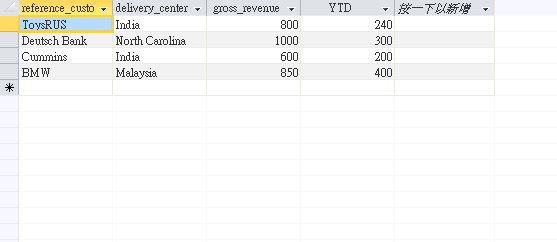

TransformIT
Building the future of IT

Assignment 2
Q1. Create a database with one table for
your business. Make sure it has no unnecessary redundancy. Keep
your database small for demonstration purposes with just a few
columns and a few rows of data. Store your database in your web
folder. Also write a sample query relevant to your business, and
save it in your database. Describe your database on your a2 page
by using the notation TABLENAME(attribute1, attribute2, ... ), and
also in English. Describe your query on your a2 page by writing
your query in SQL, and in English.
A1. Our table in the database has the format:
service(vendor_service, price, delivery_center,
service_window_hour, service_window_week), which
is shown as follows.

Figure 1. Table: service
We then made a query using following SQL command: SELECT vender_service FROM service WHERE delivery_center='North Carolina';. The result is shown below.

Figure 2.
Table: serviceq
Q2. Create a static data page containing the
response to your query. Save it in your folder. Create a link
from your a2 page to your data page.
A2. Please refer to the
link for our answer to
Q2.
Q3. Add a second table to your database.
Make sure it is also non-redundant. Write a two-table query.
Save it in your database. Describe the new table on your a2 page
by using the notation of Question 1, and also in English.
Describe the new query on your a2 page by writing it in SQL, and
also in English.
A3. We first added a new table called customer
with format
customer(vender_service, activity, reference_customer).

Figure 3. Table: customer
Then, we perfomed a two-table query using the following SQL command: SELECT service.vender_service, service.price, service.delivery_center, customer.reference_customer FROM service, customer WHERE service.vender_service=customer.vender_service AND service.delivery_center='North Carolina' AND customer.reference_customer='Cummins' AND service.price<70;. The result is shown below.

Figure 4. The result of two-table query
Q4. a. Read the article on
Direct Marketing and explain how Target determines if someone is
pregnant. b. What is relationship marketing?
How is it different from direct marketing? c.
Why is relationship marketing more desirable than mass
marketing? Why was mass marketing more desirable in the past?
What changed? d. How can you use relationship
marketing in your business to improve customer service?
A4. a. Direct Marketing at
Target is done largely through Data Processing. For every guest,
Target assigns a Guest ID number which stores information about
purchases, credit card information, and demographic data. Using
the stored buying data for women who registered at Target’s Baby
Registry, analysts were able to identify trends that indicated a
change in their pregnancy status. Furthermore, the analysts were
able to pinpoint trends in their purchases specific to which
trimester of their pregnancy they were in. The statisticians at
Target noticed that women who were pregnant bought products such
as unscented lotion and mineral supplements in larger
quantities. With the extensive analysis that he conducted,
statistician Andrew Pole identified 25 products. When analyzed
together these 25 products can be used to assign a pregnancy
score to each shopper and predict a due date.
b. In relationship marketing, there is interaction with the customer to build an individual rapport with them. In this paradigm, individual customers are tracked over time and treated uniquely. Maintaining such relationships requires providing personalized ads, and goes so far as to create personalized products. With the growth of database technology, relationship marketing has become much cheaper to maintain. Unlike relationship marketing where each customer is uniquely tracked, direct marketing is used solely to forecast customer purchases. Relationship marketing is based on trust and communication with customers.
c. Relationship marketing is less intrusive and more personalized than mass marketing. It has many relative advantages: customers get targeted information and personalized services that allow them to trust the information they are getting. As a result of personalized attention, relationship marketing results in higher sales, as well as retention of market share and dominance in certain sectors. Mass marketing was more desirable in the past because it was affordable and easy to implement. Newspapers, television and radios are example of mass marketing. Early ads on the internet were in effect mass marketing tools. With the development of database technology however, acquiring and maintaining information about individual customers became easier and cheaper. With time, the cost of technology (database management and storage of big data) reduced and tipped the scales in favor of relationship marketing.
d. Relationship Marketing emphasizes personal relationships between the company and individual customers. In return for provided unique service and personalized products, the customers end up being very loyal to the companies that offer them the individualized attention. Because of this individualized attention, businesses that practice relationship marketing often have good customer service reputations. With the development of database technology, it is now 5 times more expensive to obtain customers than it is to maintain relationships, and personal information, about individual customers. Relationship marketing can be enhanced by acting on the relevant stored data for each customer.
Q5. Create a dynamic data page, and a link
to it from your main page.
A5. Please refer to the
link for our answer to
Q5. The SQL
command used to query was the same as that in A1.
Q6. Create an interactive data page, and a
link to it from your main page.
A6. Please refer to the
link for our answer to Q6.
Q7. Stock markets can be used to make
predictions. Go to www.hsx.com
and see how they use a stock market to predict the success of
new movies. Register and buy stock in various movies. Provide a
screenshot of your purchases on your web page. Report on your
web page how the market operates and how you could use this
strategy in your business. Alternatively use
www.hubdub.com to predict
news items, and answer the same questions.
A7.

Figure 5.
HSX stock market
The stock market in its crude terms "Legalized Gambling". In this case we start with some money (virtual H$). When I buy a stock in any company (in this case movie or TV show), I invest in that company and hence, if the company's value in the market goes up, the price of the stock goes up and when I predict it has reached saturation, its best for me to sell this share that I have in the company and make the maximum profit. But, I also share the risk with the company or the movie, if its not making money or in the worst case starts declining in importance/sales, I end up losing the amount I have in form of equities. In our company, the strategy we like to use is get as many investors as possible to raise more money and earn credibility in the market so that even money starts pouring in and the risk is shared with all the investors. Credibility is earned by acquiring more reliable customers and making the our stock prices go higher. The higher the credibility, the more the number of investors and hence, the more I get in the future business.
Q8. a. Explain how online
stores can take advantage of the services provided by physical
stores? How can physical stores respond? b.
Read the article titled “Google vs Amazon” and explain how
Google intends to take advantage of the existing physical stores
to create an online store? c. Explain how you
can create synergies between physical and online stores in your
business, if possible. If not possible, give another example of
a business successfully creating synergies between online and
physical stores.
A8. a. Online Stores (web
retailers) can take advantage of physical stores by offering
lower prices for the same product, i.e. customers can test out
products in a physical store but opt to buy it online for lower
prices. In this instance, the web retailer takes advantage of
physical retail spaces. Physical stores can offer personalized
services such as fast delivery, in store pickup (from web
orders), and free repairs for internet orders.
b. Google intends to become an intermediary between local stores and customers. They are not interested in building stores that offer the same service; rather they would like to offer a service similar to that of amazon i.e. connecting inventory (and the retailer) to the customer. Their search engine will provide access to inventory, and Google will take care of delivery services. Google plans on taking advantage of physical inventory that they don’t have but will benefit from the sales of Google Offers.
c. The existence of both web and physical retailers for the same business without synergy can lead to cannibalization of the physical store and free rider problems. To create a synergy between the web retailer and the physical retailer the physical store can offer a variety of add-on services that are unavailable on the internet. Physical stores can be used to fill online orders and offer fast delivery services. They can also be used to offer repair services for items bought online. Similarly, web retailers often are able to house a larger inventory for lesser costs, therefore they can be used to access a larger inventory that the physical retailer may not be able to offer.
Example: Best Buy has a successful physical store but often uses integrated services from their website in order to supplement what they can offer their customers. In the event that their physical store does not have a product available, customers are able to order products online and have it delivered to their stores for pickup.
Q9. a. Read the
article on Culturomics and
explain how Google’s Digitized Book database can be used to
understand historical and cultural trends. b.
Explain how, using the same techniques, Google’s Search data can
be used to make predictions about the future. c.
Explain how you can use such historical trends and future
predictions in your business strategy, with an example.
d. Use Google Ngram Viewer to plot some historical and
cultural trends related to your business. For example, you can
plot how the relative emphasis on wireless internet and wired
internet changed during the last 20 years. Provide a screen shot
of your graph on your web page.
A9. a. In a single statement,
it is getting the mathematics attached to history and
humanities, since it’s not considered ‘measurable. ’As per the
article, the goal of building such a tool is to even equip the
kids to browse through the cultural trends throughout history,
as they were recorded in books. Two hundred years of history in
the form of 5 million digitized books can now be probed for
cultural trends using Google's new culturomics tool and the
integrated N-gram viewer.
b. The kind of acceptance that is given to one keyword vs. the other at a certain point of time gives an idea about how popular is the topic and how many of their journals or publications were popular. Seeing the trend over 200 years can give us an idea about whether the society has gained more popularity over the other by seeing either an individual’s popularity or the correlation between two authors or the topics which have gained interest and this data can be used to realize some amazing comparison.
c. When developing a business strategy, it is important to understand industry trends, the practices of competitors, and the state of an existing strategy overall. For example, by understanding current activity, a plan can be made to accommodate market demand. It is also advisable to forecast changes in order to create a system that will be able to adjust to new trends. Also, it has the potential to dig out some obvious errors in the past failures.
Say, I have to choose between IT strategies within my firm. I can look up the trends of let’s say cloud computing vs dedicated infrastructure and I can make out the differences of trends as shown below to get an idea. I can even go for further detailing as to see what vendors or what strategies have worked out in the past and what should I avoid after doing proper research.

Figure 6. (discription)
d. We tried to study the comparison between Rack servers and Blade servers and not surprisingly, the demand of blade servers has been increasing over the past 20 years. Snapshot attached below.

Figure 7. (discription)
Q10. a. Write a negative
query. Save it in your database. Describe the query on your web
page in English and in SQL. Be careful with negative queries. If
it can also be written without the NOT IN feature, then it is
not a negative query! b. Give an example of a
possible database table in your business that includes an
unnecessary redundancy. Make sure it is not a trivial redundancy
that duplicates a complete row (entity) or a complete column
(attribute). Describe your table by using the notation TABLENAME
(attribute1, attribute2, …), and listing some of its contents in a
table format. Identify the redundancy by using specific values
listed in your table, and state explicitly how many times it is
stored. Explain how you would eliminate that redundancy.
Describe the new non-redundant database using the same notation
and show its contents using the same table format. You don’t
have to actually create this table in MS ACCESS.
A10. a. Negative Query: Show
all services that are not offered in North Carolina or Mexico,
the SQL command is as follows: SELECT
distinct customer.vender_service FROM customer, service WHERE
(customer.vender_service NOT IN (SELECT service.vender_service
FROM service WHERE service.delivery_center='North Carolina' OR
service.delivery_center='Mexico'));
b. Redundant Database: total_revenue(reference_customer, delivery_ceneter, gross_revenue, YTD)

Firuge 8. A table with redundancy
In this database we are interested in knowing the gross revenue per customer for each service that we offer. It is redundant, because while it is helpful to know the gross revenue per customer for every delivery center, the delivery center field is stored twice in two different tables. It is unecessary to have the the delivery center field in this table because two nested queries can help extract the delivery center data from the first two tables using the common key: vender_service. Therefore, we can have our inredundant table with the following format: total_revenue(reference_customer, gross_revenue, YTD).
Q11. a. Explain the
fundamental tradeoff between inconsistency and information
overload in organizational decision-making. How is it related to
the centralization-decentralization debate? b.
Can organizational databases improve centralized decision
making? How? c. Do network effects tip the
balance towards centralization or decentralization according to
Braess’ Paradox? d. Braess uses highways to
demonstrate his paradox. Do highways have network effects? What
kind? e. Braess argues that wide spread
adoption of new and improved technologies may leave everyone
worse off. List the conditions that would lead to that outcome.
Give an example from your business or elsewhere.
A11. a. Inconsistency vs. overload is one of the primary trade-offs, which originated the
centralization-decentralization debate. When the data is
inconsistent, this means the data is not collected and
synchronized in some cases to other units of the same business
(also referred as localized data). In this case there is not
enough data to make interpretation or the decision making is
done locally at every unit. On the other hand, when there is a
lot of data to analyze at a central level, it could lead to
discrepancies among various units since all the policies are
centralized. It makes the system more complex and has a single
point of failure.
b. Yes, the organizational databases improve centralized decision making since, everyone has the same consistent information to analyze and in turn the decision makers in an organization use that centralized database to create new policies and business strategies moving forward. This also leads to consistency among the data in different business units and can lead to an integrated environment.
c. According to the Braess’ paradox, network effects tip the scale towards centralization as the network effects always start from the center and the center is the originating point.
d. Braess paradox uses highways to show the fact that adding an extra road or increasing capacity in a traffic network can actually increase the average travel time on a highway. A good example of this was seen in Boston’s Big dig project. According to boston.com: The Big Dig, essentially increased the capacity of the central highway and its interchanges by placing the entire system as a series of tunnels under the central business district. It did relieve congestion but the overall commute times were actually longer as a result. As almost all people started using the new route, which led to a bottleneck on that route. This was the cause of network effects.
e. According to Braess, the wide spread adoption of new technologies may leave everyone worse-off. The condition on this statement is that without adequate centralization, we won’t be able to realize proper network effects. For example, If we upgrade only a part of our business to enjoy greater bandwidth due to the load on that unit. But, if we don’t implement it centrally, we risk forming a bottleneck in the routes between these units. This could lead to what Braess tried to explain.
Q12. a. Explain the basic
tradeoff between market share and market size as it relates to
technology outsourcing? b. Do network effects
matter in this tradeoff? How? c. What part of
your business can you outsource safely? Will it impact your
market share? Will it increase the overall market size?
d. Read the article titled “Outsourcing Complexity in
Smart Phones” and explain the difference between the strategies
of iPhone and Android phones. How is it similar to Apple vs
Microsoft battle in the Microcomputer market of 1980’s? How is
it different?
A12. a. When Technology is
outsourced by a company, for example Microsoft’s outsourcing of
hardware and property over software, they sacrifice a large
market share of a small market size in favor of a small market
share of large market size. Outsourcing a portion of technology
increases the size of the market, i.e. there is a higher and
more varied supply for the same market. As a result each
provider has a control over a smaller portion of the market.
b. Outsourcing technology increases the size of the market and reduces costs and prices leading to a larger market size. When you have a larger market, network effects can be instrumental in popularizing the product. In the example mentioned above, lower costs of Microsoft computers leads to more people buying them; with more users, one expects that application development for this platform will grow. As the number of available applications grows, it attracts more users, increasing the size of the market even more. As you can see, network effects can be instrumental in the trade-off related to outsourcing technology.
c. When outsourcing a portion of your business, it is advisable that core competence isn’t compromised. A company’s core competence is the portion of their services which gives them an edge over other companies that offer the same services. Outsourcing the non-complex part of your business is advisable since it will increase your market size while reducing the market share. However, the service your business provides is likely to gain monetary advantage due to the network effects that technological outsourcing leads to.
d. Similarities: The iPhone is once again maintaining a tight control over their technology, whereas Android, like Microsoft in the past, has outsourced the hardware platform and kept the Android OS as their core competence. Because of this tight hold on their technology, both hardware and software, Apple is sacrificing the lead that they had over the first few years of debuting the iPhone. Also, despite having better and more applications available on the App Store, with time the android app store could grow to be just as profitable, or more so than the Apple app store.
Differences: Contrary to the first conflict (against Microsoft), the iPhone has the advantage of two other devices on the market: the iPod Touch and the iPad. Since all three run iOS, they can take advantage of one iTunes user account, in essence, rather than competing with one device, Apple is fighting in 3 markets (mp3 players, smartphones, tablets) with one OS which is giving them a larger market share than before.
In any case, the difference in Strategy is affording Apple only a slight advantage in terms of market share. Monetarily however, this advantage gives them a significant amount of capital which they invest in maintaining their competitive advantage.
Q13. Create an interactive update page and a
link to it from your main page.
A13. Please refer to the
link
for our answer to Q13.
Q14. a. Create an
interactive data page with input validation, so the input values
are checked for correctness before you submit the form.
b. Create a menu to interact with your database.
A14. Please refer to the
link
for our answer to Q14.
1. Missing English query
9b. “Search predicts future behavior.”
13. Edit/Update does not work.14. missing answer to part b
Instructions
This is a mock website for the course NBA 6010 - Electronic Commerce given by Prof. Levent V. Orman at Samuel Curtis Johnson Graduate School of Management, Sage Hall, Cornell University, Ithaca, NY 14853-6201.
Team Members:
Amrisha Sinha, Ching-han Yu, and Pranjal Sharma